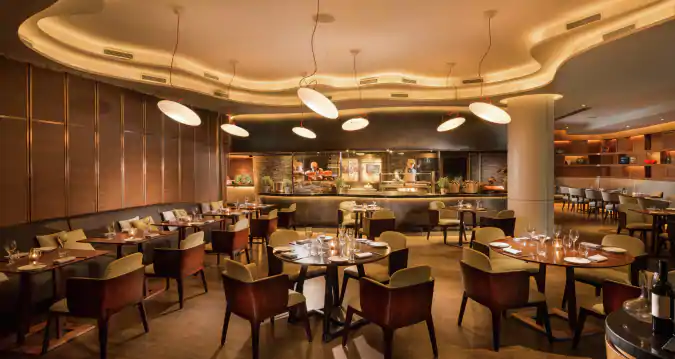

Food court
Feast and drink on delicious dishes and delightful concoctions to your heart's content with the offers and deals at Marina Bay Sands' best restaurants and bars.

Feast and drink on delicious dishes and delightful concoctions to your heart's content with the offers and deals at Marina Bay Sands' best restaurants and bars.
Rise Restaurant at Marina Bay Sands (MBS) is an all day dining restaurant with an international buffet spread. Even though the Rise buffet prices are not cheap ($45++ for lunch, and $68++ for dinner), it has been extremely popular with buffet lovers. The question on everybody’s mind: is this the best buffet in Singapore? Is it worth spending eighty bucks for a buffet dinner? One thing to note first, Rise restaurant at Marina Bay Sands does not take phone reservations, so if you are going for the MBS buffet during a weekend, it will be wise to go earlier (buffet dinner starts at 6pm) to get a table, especially for big groups.